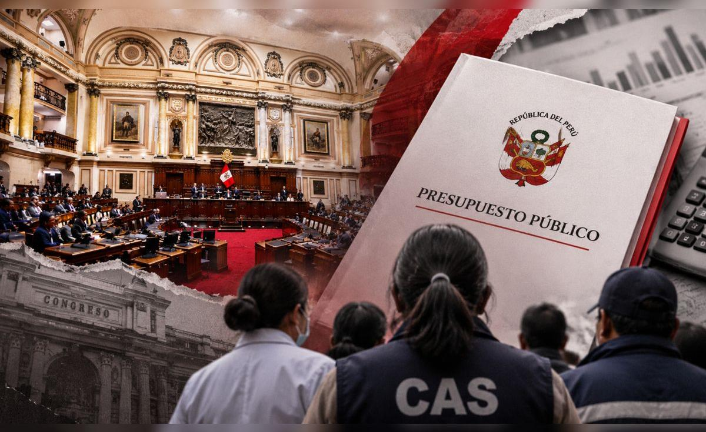
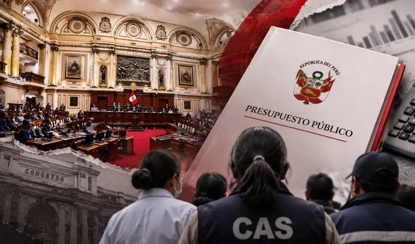

El Presupuesto Publico 2027 por S/266.506 millones fue aprobado sin incluir el pago del 100% de CTS para CAS que cesen por edad, ni el nombramiento de ex CAS COVID ni el pase al regimen 728.

El Pleno del Congreso aprobo el Presupuesto Publico 2027 por un monto de S/266.506 millones.
El Congreso de la Republica aprobo el Presupuesto Publico para el ano fiscal 2027 sin incorporar varias de las principales demandas laborales planteadas por trabajadores del Estado. La decision se concreto el viernes 20 de noviembre, cuando la Camara de Diputados y el Senado respaldaron el texto sustitutorio por un monto de S/266.506 millones.
Si bien la ley contempla incrementos mensuales para los servidores de los regimenes 276, 728 y CAS desde enero de 2027, quedaron fuera pedidos clave relacionados con la compensacion por tiempo de servicios (CTS), el nombramiento de ex trabajadores CAS COVID y el traslado de personal al regimen 728 en determinadas entidades publicas. La exclusion de estos puntos ha generado malestar entre gremios del sector publico que esperaban avances concretos en estabilidad laboral y reconocimiento de derechos.
Uno de los pedidos que no prospero fue establecer una excepcion para que los trabajadores CAS que cumplan 70 anos y cesen durante 2026 o 2027 reciban el 100% de su CTS. La propuesta buscaba evitar que quienes estan proximos a retirarse perciban una compensacion calculada con los porcentajes reducidos del cronograma vigente.
La Ley 32563 y el Decreto Supremo 142-2026-EF establecen que el beneficio se aplique de forma progresiva. El esquema aprobado es el siguiente:
La solicitud fue planteada durante el debate presupuestal por el congresista Ernesto Zunini, a pedido del Sindicato de Trabajadores CAS del Ministerio de Educacion. La intencion era que los servidores que alcancen el limite de edad no tengan que esperar hasta 2030 para recibir el monto integro, pese a que el cese les impida continuar acumulando anos de servicio. Sin embargo, el texto aprobado no incorporo esa excepcion.
Los trabajadores CAS seguiran sujetos al cronograma gradual de CTS establecido por la Ley 32563.
Otra demanda que no consiguio incorporarse fue la asignacion de recursos para avanzar con el nombramiento progresivo del personal ex CAS COVID. La Ley 32568 autoriza este proceso para trabajadores que prestaron servicios durante la emergencia sanitaria, pero su aplicacion requiere respaldo presupuestal concreto.
El pedido apunta a que la autorizacion legal no quede unicamente en el papel y pueda ejecutarse con recursos que permitan avanzar en la incorporacion de estos trabajadores. Se trata de personal contratado bajo modalidades vinculadas a la emergencia sanitaria que busca acceder a una situacion laboral mas estable, luego de anos de servicio en primera linea durante la pandemia.
Tambien quedaron fuera las disposiciones solicitadas para facilitar el traslado de trabajadores CAS al regimen del Decreto Legislativo 728 en entidades como el Ministerio Publico, el Poder Judicial y otros organismos del Estado. Este cambio de regimen es una demanda recurrente de los servidores publicos, ya que el regimen 728 otorga mayores beneficios laborales en comparacion con el contrato CAS.

El presupuesto 2027 priorizo incrementos salariales generales, pero dejo fuera demandas especificas de grupos laborales.
Pese a las exclusiones, el Presupuesto Publico 2027 contempla incrementos mensuales para los servidores de los regimenes 276, 728 y CAS a partir de enero de 2027. Estos aumentos buscan mejorar la remuneracion de los trabajadores estatales en un contexto de alza del costo de vida. Sin embargo, para los gremios afectados, los incrementos no compensan la falta de avances en derechos laborales estructurales como la CTS completa, el nombramiento pendiente y la transicion a un regimen mas estable.
El debate presupuestal deja en evidencia la tension entre las demandas laborales del sector publico y las restricciones fiscales del Estado. Con el presupuesto ya aprobado, los trabajadores que esperaban estas modificaciones deberan aguardar nuevas iniciativas legislativas o la asignacion de recursos en futuras modificaciones presupuestales para ver atendidos sus reclamos.